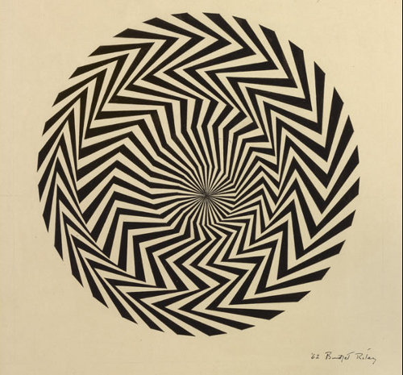

Victor Vasarely
Victor Vasarely (born 1908), the Hungarian-French artist, was recognized as the greatest innovator and master of Op Art. He was born in Pécs, Hungary, on April 9, 1908. As a young man he attended the Academy of Painting in Budapest (1925-1927).and then studied under Alexander Bortnyik at the Mühely, also known as the Bauhaus School of Budapest (1929-1930). The Bauhaus schools were noted for approaches to architecture and graphic design that were compatible with machine production of high quality and with well-designed objects and environments.

Bridget Riley
At the beginning of World War II Riley's father was called up into the army and Bridget Riley, together with her mother and sister Sally, moved to a cottage in Cornwall. The cottage, not far from the sea near Padstow, was shared with an aunt who was a former student at Goldsmiths' College, London. Primary education came in the form of irregular talks and lectures by non-qualified or retired teachers. She attended Cheltenham Ladies' College (1946–1948) and then studied art at Goldsmiths College (1949–52), and later at the Royal College of Art (1952–55). There her fellow students included artists Peter Blake, Geoffrey Harcourt (the retired painter, also noted for his many well known chair designs) and Frank Auerbach. In 1955 Riley graduated with a BA degree.

Richard Anuszkiewicz
He was one of the founders and foremost exponents of Op Art, a movement during the late 1960s and early 1970s. Victor Vasarely in France and Bridget Riley in England were his primary international counterparts. In 1964, Life magazine called him "one of the new wizards of Op". More recently, while reflecting on a New York City gallery show of Anuszkiewicz's from 2000, the New York Times art critic Holland Cotter described Anuszkiewicz's paintings by stating, "The drama -- and that feels like the right word -- is in the subtle chemistry of complementary colors, which makes the geometry glow as if light were leaking out from behind it."